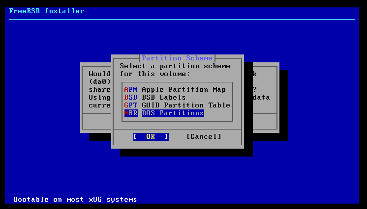

Installation

Laisser démarrer automatiquement pfSense.


Choisir Install puis OK

Choisir Auto (UFS) puis OK

Choisir Entire Disk

Choisir MBR Dos Partitions

Choisir Finish

Choisir Commit

Redémarrer la machine.